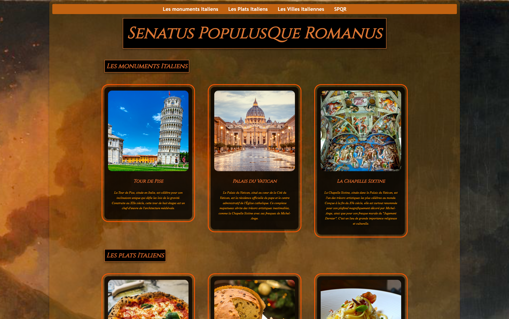

J'ai commencé en suivant Percy Jackson, maintenant je veux rejoindre Scratch.
Littérairement vôtre,
Un passionné.
01001000 01000101 01001100 01001100 01001111
Littérairement vôtre,
Un passionné.
This is only the beginning
Je peux concevoir, expérimenter, ajuster, mais je sens bien qu'il me manque encore les bases techniques solides pour être pleinement autonome. C'est précisément cette marche que je veux franchir.
MMI représente pour moi la suite logique de ce parcours. Aujourd'hui, je sais très bien que quelque soit la direction que prendra mon avenir, il ira de pair avec l'apprentissage de ces outils numériques que ce soit en autodidacte ou accompagné et dont je ne connaissais seulement le nom il y a à peine un an encore.
Le livre m'a appris à organiser le sens ; le numérique m'a donné envie d'organiser le monde. MMI n'est pas pour moi une bifurcation, mais un élargissement : passer du texte aux interfaces, du récit aux expériences, de l'objet fini aux objets vivants. Je n'ai pas encore un métier précis en tête, mais j'ai une direction : comprendre comment une idée devient forme, comment une intention devient image, comment une histoire devient expérience numérique. C'est exactement ce que MMI propose.
Avec le recul, cette vulgarisation en graphique c'était déjà une forme d'UX : partir des besoins des autres, organiser les données, choisir une forme visuelle qui facilite la décision.
En MMI, c'est cette démarche que je veux continuer, simplement avec d'autres outils et à une autre échelle.

La situation finale n'existe pas encore. Ce portfolio marque une étape : un état des lieux honnête de ce que j'ai exploré jusqu'ici, de mes intuitions comme de mes limites actuelles.
Quand est venu le moment de concevoir mon portfolio, les maîtres mots étaient l'ambition et l'originalité. Je ne voulais pas de quelque chose de classique, de trop propre mais quelque chose qui me ressemble, dont je pourrais être réellement fier.
Hiérarchiser des contenus, construire un sommaire, penser un parcours de lecture. Cette rigueur éditoriale est la base de tout bon projet numérique.
Ne jamais regarder un objet culturel uniquement par sa surface. Qui décide ? Pour qui ? Avec quelles contraintes ? Un site n'est jamais neutre.
Si ce n'est pas clair, ça ne fonctionne pas. Une interface, comme un texte, est une forme de conversation. Parfois, on est tellement investi qu'on en oublie le message à faire passer, c'est là où les autres nous viennent en aide.
Quand j'étais délégué durant mes trois années de lycée, je transformais les retours de mes camarades de classe en diagrammes que je distribuais aux professeurs lors des conseils de classe. Je faisais toujours un discours devant l'assemblée du corps enseignant en guise d'explication de mes diagrammes.
Partir des besoins des autres, organiser les données, choisir une forme visuelle qui facilite la décision.
Cette SAE demandait de condenser plusieurs siècles de musique, de littérature française et d'histoire de l'art dans une seule ligne visuelle cohérente. Construire un rythme, hiérarchiser les événements et trouver une charte graphique lisible. J'ai compris à quel point le design sert avant tout à rendre le savoir accessible — et agréable à parcourir.
Création d'une maison d'édition fictive. Pour ce projet de groupe, j'ai créé un site web crédible pour une maison d'édition. J'ai travaillé sur la structure, la cohérence visuelle, la navigation, tout en veillant à ce que l'identité de la maison reste présente à chaque page. Ce fut une belle initiation à la logique professionnelle : organiser, répartir, trancher, et produire un résultat qui tient debout.
Les Métiers du Multimédia et de l'Internet ont un fort taux de profil orienté vers les domaines scientifiques et technologiques. Je viens d'un parcours littéraire et éditorial. Loin d'être un handicap, c'est ce qui structure aujourd'hui ma manière d'aborder le numérique.
En parallèle, mes cours de culture numérique — ceux que j'attendais le plus dans la semaine — m'ont ouvert une autre porte : comprendre d'où vient tout ça. J'ai commencé à lire sur les pionniers de l'informatique et du web, de Pascal à Ampère en passant par Turing, d'Ada Lovelace à Blackwell, pour ne citer qu'eux, non sans hasard.

Les projets de groupes sont nombreux en Métiers du Livre et du Patrimoine et parmi eux, certains m'ont permis d'en apprendre plus sur le numérique.
Une vraie première fois en tournage et en montage : écrire un script, découper en plans, gérer le cadrage, le son, le rythme, le lien entre texte et image. Là encore, même logique : comment adapter un objet (un livre) à un autre médium (une vidéo), sans perdre son intention ?
Pas seulement le résultat, dont l'UI est sommaire, mais le processus lui-même : structurer l'information, choisir les couleurs, voir mes modifications s'afficher en direct. J'y ai passé plus de temps que les autres. Pas par obligation, mais parce que quelque chose dans cette façon de créer me plaisait vraiment. J'ai eu la meilleure note de ma promo pour ce projet.
Après cette première expérience, j'ai commencé à voir les sites non plus comme de simples et jolies interfaces mais comme la résultante d'un processus de création mûrement réfléchi. J'ai donc décidé d'approfondir ces connaissances en en apprenant plus sur ce domaine si présent dont moi, simple moldu, ne connaissais pas.
D'abord Figma, pour sortir de la page statique et réfléchir en termes d'interface. Comment disposer les éléments pour que l'œil comprenne où aller ? Où placer un bouton, un menu, un titre ? Quels composants réutiliser, quels états prévoir ? Figma m'a appris qu'avant même une ligne de code, on peut déjà raconter quelque chose avec des blocs, des espacements et des couleurs.
Au lycée, Python en cours de maths a tout cassé. Des équations que je ne comprenais déjà pas, traduites dans un langage qui me restait opaque. J'en ai tiré une conclusion simple et fausse : le code, c'était ça, des mathématiques inaccessibles. Pas pour moi. Cette conviction m'a suivi pendant des années.
Aujourd'hui en 2e année de Métiers du Livre, dans un cours de développement web, tout a basculé. Le code n'était finalement pas qu'affaire d'équations : il était visuel, organique, vivant.
Il y a un an, j'ai créé mon premier site web lors d'un cours d'informatique. Le sujet : l'Italie. Trois sections en cards — Nourriture, Monuments, Villes — structurées en HTML et stylisées en CSS. Les bases les plus basiques de la basitude.
Une histoire en cinq actes
Au CDI du collège, j'ai découvert deux mondes : Percy Jackson et Scratch. L'un vivait des histoires, l'autre permettait d'en créer. Mais quand mes camarades programmaient des jeux de vaisseaux spatiaux avec collisions et scores, moi je passais mes heures à animer des évolutions Pokémon. Le résultat visuel m'importait plus que la mécanique. Ce n'était pas le système qui me fascinait, c'était le mouvement, la transformation à l'écran, le processus de création.